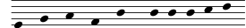
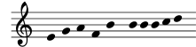

| [ << Notensatz ] | [Top][Contents][Index] | [ Literatur >> ] |
| [ < Die Darstellung der Musik ] | [ Up: Ein Programm bauen ] | [ Flexible Architektur > ] |
Welche Symbole?
Während des Notensatzprozesses entscheidet sich, wo Symbole platziert werden. Das kann aber nur gelingen, wenn vorher entschieden wird, welche Symbole gesetzt werden sollen, also welche Art von Notation benutzt werden soll.
Die heutige Notation ist ein System zur Musikaufzeichnung, das sich über die letzten 1000 Jahre entwickelt hat. Die Form, die heute üblicherweise benutzt wird, stammt aus der frühen Renaissance. Auch wenn sich die grundlegenden Formen (also die Notenköpfe, das Fünfliniensystem) nicht verändert haben, entwickeln sich die Details trotzdem immer noch weiter, um die Errungenschaften der Neuen Musik darstellen zu können. Die Notation umfasst also 500 Jahre Musikgeschichte. Ihre Anwendung reicht von monophonen Melodien bis zu ungeheuer komplexem Kontrapunkt für großes Orchester.
Wie bekommen wir dieses vielköpfige Monster zu fassen und in die
Fesseln eines Computerprogrammes zu legen?
Unsere Lösung ist es, das Problem in kleine (programmierbare) Happen zu zerteilen, so dass jede Art
von Symbol durch ein eigenes Modul, als Plugin bezeichnet,
verarbeitet werden kann. Jedes Plugin ist vollständig modular
und unabhängig und kann unabhängig entwickelt und verbessert
werden. Derartige Plugins werden engraver genannt,
analog zu den Notenstechern (engl. engraver), die musikalische
Ideen in graphische Symbole übersetzen.
Im nächsten Beispiel wird gezeigt, wie mit dem Plugin für die Notenköpfe,
dem Note_heads_engraver („Notenkopfstecher“) der Satz begonnen wird.
Dann fügt ein Staff_symbol_engraver („Notensystemstecher“)
die Notenlinien hinzu.

Der Clef_engraver („Notenschlüsselstecher“) definiert
eine Referenzstelle für das System.

Der Stem_engraver („Halsstecher“) schließlich fügt
Hälse hinzu.
![[image of music]](../ae/lily-4a4871d2.png)
Dem Stem_engraver wird jeder Notenkopf mitgeteilt,
der vorkommt. Jedes Mal, wenn ein Notenkopf erscheint (oder mehrere bei
einem Akkord), wird ein Hals-Objekt erstellt und an den
Kopf geheftet. Wenn wir dann noch Engraver für Balken, Bögen,
Akzente, Versetzungszeichen, Taktstriche, Taktangaben und Tonartbezeichnungen
hinzufügen, erhalten wir eine vollständige Notation.
![[image of music]](../b0/lily-bb1310d3.png)
Dieses System funktioniert gut für monophone Musik, aber wie geht es mit Polyphonie? Hier müssen sich mehrere Stimmen ein System teilen.
![[image of music]](../2b/lily-66f813d0.png)
In diesem Fall benutzen beide Stimmen das System und die Vorzeichen gemeinsam, aber die Hälse, Bögen, Balken usw. sind jeder einzelnen Stimme eigen. Die Engraver müssen also gruppiert werden. Die Köpfe, Hälse, Bögen usw. werden in einer Gruppe mit dem Namen „Voice context“ (Stimmenkontext) zusammengefasst, die Engraver für den Schlüssel, die Vorzeichen, Taktstriche usw. dagegen in einer Gruppe mit dem Namen „Staff context“ (Systemkontext). Im Falle von Polyphonie hat ein Staff-Kontext dann also mehr als nur einen Voice-Kontext. Auf gleiche Weise können auch mehrere Staff-Kontexte in einen großen Score-Kontext (Partiturkontext) eingebunden werden. Der Score-Kontext ist auf der höchsten Ebene der Kontexte.
![[image of music]](../c5/lily-6cf130f5.png)
Siehe auch
Referenz der Interna: Contexts.
| [ << Notensatz ] | [Top][Contents][Index] | [ Literatur >> ] |
| [ < Die Darstellung der Musik ] | [ Up: Ein Programm bauen ] | [ Flexible Architektur > ] |